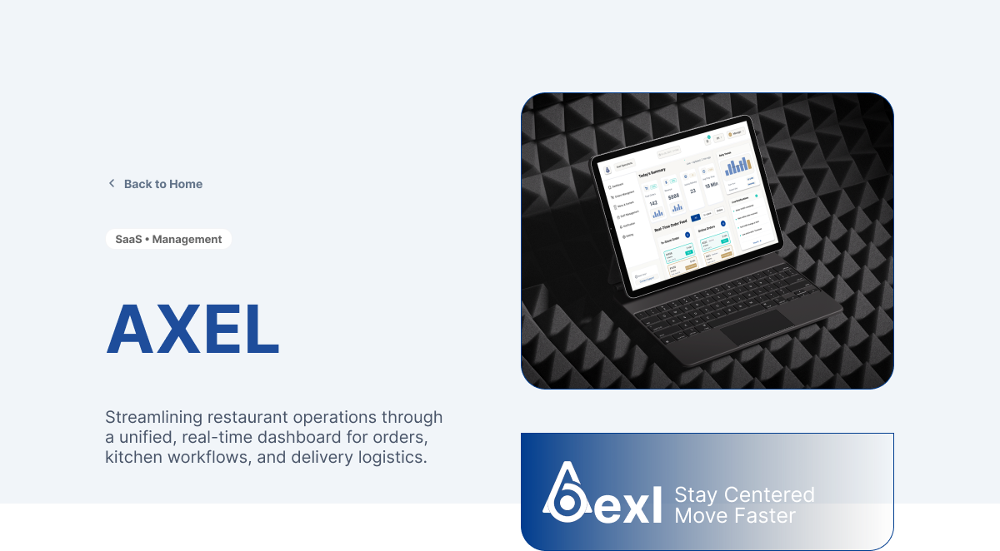

Selected Work / 2025-2026
A focused index of product decisions, not a gallery of screens.
Axel is the complete public case. Chance AI and Deloitte x SCADpro preserve the process and design reasoning while keeping private product details protected.
Restaurant Operations / System-level UX
Axel SaaS
Translated operational friction across 27 restaurants into a daily action center and unified order workflow.
Field ResearchJourney MappingProduct StrategyInformation Architecture

AI Product UX / Growth & Activation
Chance AI
Designing AI-native workflows, activation logic, and commercial surfaces that make the product's value legible early.
Product SignalsActivation LoopsAI Interaction StatesGrowth Experiments
Experience Strategy / AI Guidance
Deloitte x SCADpro
Improved information clarity, onboarding, and AI guidance for a healthcare experience where trust depends on sequence.
Research SynthesisOnboarding IATrust PatternsClient Strategy